Neste capítulo, iremos abordar as simetrias e as transformações geométricas no plano cartesiano. Ao longo do capítulo, as atividades e os textos vão, aos poucos, trazendo diferentes tipos de simetria e retomando a representação de pontos e figuras no plano cartesiano. De modo a ampliar o vocabulário dos alunos.
Sempre que possível, incentive-os a trabalharem em grupos para estimular a capacidade de comunicação e argumentação, validar as conclusões, as hipóteses e, também, reformular conclusões.
Durante as atividades e situações propostas, os alunos precisam desenvolver a capacidade de imaginar as figuras iniciais e finais para prever resultados a partir de simetrias de reflexão, rotação ou de translação. Para isto, será explorado o estudo de simetrias por meio do software GeoGebra, um programa de geometria dinâmica.
124
Capítulo 5 - Plano cartesiano e as transformações geométricas
Representando um polígono no plano cartesiano
Estudamos anteriormente sobre como representar um polígono em um plano cartesiano.
- A reta x é a reta na posição horizontal do plano cartesiano. É chamada de eixo x ou eixo das abscissas.
- A reta y é a reta na posição vertical, sendo chamada de eixo y ou eixo das ordenadas.
- O ponto de intersecção dos eixos x e y é identificado como o ponto de origem O.
- Utilizando a mesma unidade de medida, numeramos os eixos x e y, obtendo o plano cartesiano.
- Neste caso, o triângulo ABC tem coordenadas A (3, 2), B (7, 7) e C (9, 2).
Vamos ampliar os eixos x e y e representar também os números inteiros negativos. Neste caso, teremos quatro partes que são chamadas de quadrantes.
- O ponto M pertence ao 1.º quadrante e tem coordenadas (5, 3), ou seja, abcissa e ordenada positiva.
- O ponto N pertence ao 2.º quadrante e tem coordenadas (- 4, 6), sendo a abcissa negativa e a ordenada positiva.
- O ponto P pertence ao 3.º quadrante e tem coordenadas (- 8, - 4), sendo tanto a abcissa quanto a ordenada negativa.
- O ponto Q pertence ao 4.º quadrante e tem coordenadas (11, - 7), sendo a abcissa positiva e a ordenada negativa.
![Plano cartesiano com os eixos x e y ampliados. Com o número zero no ponto central, o plano se divide em quatro quadrantes. No eixo x, a partir do zero para a direita os números são positivos. Do ponto zero à esquerda, os números são negativos. No eixo vertical y, do ponto zero para cima, os números são positivos. Do zero para baixo, os números são negativos. O plano cartesiano possui quatro pontos nomeados de M, N, P, Q, sendo um ponto para cada quadrante. No primeiro quadrante, localizado à direita e acima, o ponto M está na coordenada 5 do eixo x e 3 do eixo y. No segundo quadrante, à esquerda e acima, a letra N está na coordenada menos 4 do eixo x e 6 no eixo y. No terceiro quadrante, à esquerda e abaixo, a letra P está na coordenada menos 8 do eixo x e menos 4 do eixo y. No quarto quadrante, à direita e abaixo, a letra Q está na coordenada 11 do eixo x e menos sete do eixo y.](../../resources/images/unidade4/78.PNG)
Durante o estudo de plano cartesiano, pode-se fazer um trabalho em conjunto com a disciplina de Geografia, propondo aos alunos que pesquisem as coordenadas geográficas de outras cidades, além das citadas no capítulo.
Atividade 2
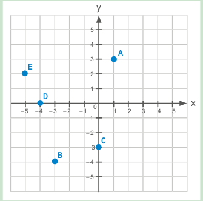Atividade 5
As imagens referidas no poema de Carlos de Oliveira, especialmente “anjo camponês”, “a terceira luz na mão” e “a chama do candeeiro”, são perfeitamente identificáveis no quadrante superior direito da tela de Picasso, entre as diversas formas simbólicas, metafóricas e não descritivas, através das quais o pintor dá substantividade ao horror da guerra e à desumanidade do homem contra os seus iguais, dos quais “Guernica” tornou-se símbolo universal.
125
ENCONTRE SOLUÇÕES
1. Em seu caderno, escreva as coordenadas cartesianas dos pontos destacados no plano a seguir: A(3, 2); B(4, 4); C(− 1, − 3); D(0, − 1); E(4, 0); F(− 2, − 2); G(0, 3).
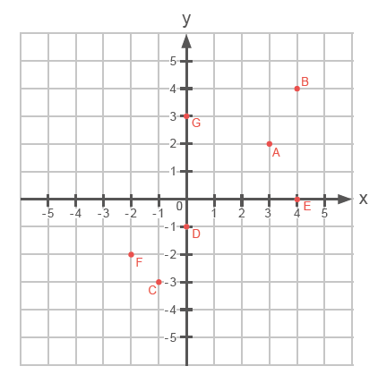2. Em um papel milimetrado, construa um plano cartesiano e localize os seguintes pontos:
- A (1, 3)
- B (- 3, - 4)
- C (0, - 3)
- D (- 4, 0)
- E (2, - 5)
3. Observe o triângulo representado no plano cartesiano abaixo.
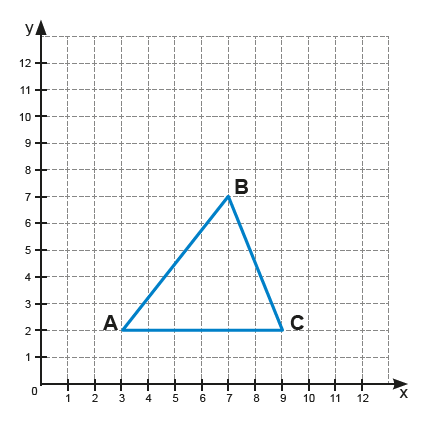a) Quais são as coordenadas dos vértices desse triângulo? A(3, 2); B(7, 7); C(9, 2).
b) Qual é a classificação desse triângulo, de acordo com as medidas dos seus lados? Triângulo escaleno.
c) Qual é a área desse triângulo? 15 u.a.
4. Os pontos A (3, - 1), B (- 1, - 1), C (- 1, 3)
e D (3, 3) são vértices de um quadrilátero. Desenhe-o em um papel
milimetrado e responda às questões abaixo no caderno.
a) Qual é o quadrilátero obtido? Quadrilátero.
b) Qual é a medida dos lados desse quadrilátero? 4 u.a.
c) Qual é o perímetro desse quadrilátero? 16 u.a.
d) Qual é a área desse quadrilátero? 16 u.a.
5. (ENEM) A leitura do poema “Descrição da guerra em Guernica” traz à lembrança o famoso quadro de Picasso.
Entra pela janela
o anjo camponês;
com a terceira luz na mão;
minucioso, habituado
aos interiores de cereal,
aos utensílios que dormem na fuligem;
os seus olhos rurais
não compreendem bem os símbolos
desta colheita: hélices,
motores furiosos;
e estende mais o braço; planta
no ar, como uma árvore,
a chama do candeeiro. [...]
Após a realização da atividade 5, comente com os alunos quem foi Pablo Picasso.
Biografia de Pablo Picasso
Pablo Picasso (1881-1973) foi um pintor espanhol. "A Pomba da Paz", "Guernica", "Les Demoiselles d'Avignon", são algumas de suas obras mais importantes. Foi um dos criadores do Cubismo, um dos mais destacados movimentos de arte do século XX.
Pablo Ruiz y Picasso nasceu em Málaga, Espanha, no dia 25 de outubro de 1881. Era filho de José Ruiz Blasco, professor de História da Arte e de desenho, apaixonado por pintura, e de Maria Picasso y López.
Ainda menino, Picasso mostrou seu talento para as artes e recebeu o incentivo do pai. Seus primeiros desenhos representavam touradas. Com 14 anos, ingressou na Escola de Belas-Artes de Barcelona. Em 1896 seu pai alugou um estúdio para o filho.
Nesse mesmo ano, sua tela “Primeira Comunhão” foi aceita pela Exposição Municipal de Barcelona. O quadro “Dois Patos” foi enviado, pelo pai, para uma exposição em Málaga, recebendo o primeiro prêmio oficial do pintor.
Em 1897 Pablo Picasso foi admitido na Real Academia de Belas-Artes de San Fernando, em Madri, mas logo rejeitou as formas tradicionais da escola e voltou para Barcelona.
Em 1900, Picasso viajou para Paris e se encontra com um industrial catalão que aluga um estúdio para o artista e o põe em contato com um negociante de quadros, que realiza a primeira exposição do pintor, no dia 24 de junho de 1901, fazendo grande sucesso.
126
Uma análise cuidadosa do quadro permite que se identifiquem as cenas referidas nos trechos do poema.
![Quadro Guernica de Pablo Picasso dividido em 18 quadrantes, sendo três linhas nomeadas de 1, 2, 3 e seis colunas nomeadas de a, b, c, d, e, f. No quadrante a1 o rabo e a cabeça de um touro. No a2, uma mulher com a cabeça virada para cima e a boca aberta. Ela segura um bebê no colo. No a3, a cabeça e o corpo do bebê, mais abaixo uma mão espalmada. No b1, o corpo do touro, à direita em cinza um pássaro olhando para cima. No b2, a continuação do corpo de um animal e o rabo de um cavalo. No b3, uma cabeça virada para cima com a boca aberta. À direita, as pernas traseiras do cavalo. No c1, uma lâmpada acesa, a cabeça do cavalo com os olhos e a boca abertos e mão segurando uma lamparina. No c2, o pescoço e o corpo do cavalo. No c3, uma das patas traseiras do cavalo, a barriga do cavalo e um braço virado para cima. No d1, um braço estendido, à direita olhos assuntados e parte de um nariz. No d2, um rosto olhando para cima e parte da pata dianteira do cavalo. No d3, mão com o punho fechado segurando um pedaço de pau, à direita a pata e o pé do cavalo. No e1, o pescoço e o cabelo de uma pessoa. À direita braço erguido com a mão espalmada. No e2, o cabelo e o corpo de uma pessoa. No e3, mãos e pés de uma pessoa. No f1, rosto de uma pessoa olhando para cima e de boca aberta. À direita, braço erguido com a mão espalmada. No f2, o pescoço e o corpo de uma pessoa. No f3, pernas e pés de uma pessoa.](../../resources/images/unidade4/81.PNG)
Podem ser relacionadas ao texto lido as partes:
a) a1, a2, a3
b) f1, e1, d1
c) e1, d1, c1
d) c1, c2, c3
e) e1, e2, e3
Transformações geométricas no plano cartesiano
Nos planos cartesianos a seguir temos representados os polígonos ABC, DEF e GHI.
![Plano cartesiano de zero a 12 duplicado em quatro quadrantes. Nele dois triângulos retângulos. O primeiro triângulo é azul e está no primeiro quadrante, localizado à direita e acima. Possui 3 vértices nomeados de D, E, F. O D está na coordenada 4 do eixo x e 4 do eixo y. O E, na coordenada 12 do x e 4 do y. O F, na coordenada 4 do x e 10 do y. O segundo triângulo é verde e está no terceiro quadrante, localizado à esquerda e abaixo. Possui 3 vértices nomeados de G, H, I. O G está na coordenada menos 4 do x e menos 4 do y. O H está na coordenada menos 12 do x e menos 12 do y. O I está na coordenada menos 4 do x e menos 10 do y.](../../resources/images/unidade4/83.PNG)
127

a) Quais as coordenadas de cada um dos polígonos representados nos planos cartesianos? A(2,2); B(6, 2); C(2, 5); D(4, 4); E(12,4); F(4, 10); G(− 4, − 4); H(− 12, − 4) e I(-4,-10)
b) Observando os polígonos ABC e DEF, qual relação podemos estabelecer entre eles? Espera-se que os alunos percebam que as coordenadas do polígono ABC foram multiplicadas por 2 e que o polígono DEF representa uma ampliação do polígono ABC.
c) Observando os polígonos DEF e GHI, qual relação podemos estabelecer? Espera-se que os alunos percebam que as coordenadas do polígono ABC foram multiplicadas por −1 e que o polígono GHI é simétrico em relação à origem do plano cartesiano ao polígono CDE.
Ao multiplicarmos as coordenadas dos vértices de um polígono qualquer, representado em um plano cartesiano, por um número inteiro obtemos um novo polígono que pode ou não ser simétrico ao polígono inicial.
Simetria em relação à origem do plano cartesiano
Observe o triângulo retângulo DEF e GHI representados no plano cartesiano.
![Plano cartesiano de zero a 12 duplicado em quatro quadrantes. Nele dois triângulos retângulos. O primeiro triângulo retângulo é azul e está no primeiro quadrante, localizado à direita e acima. Possui 3 vértices nomeados de D, E, F. O D está na coordenada 4 do eixo x e 4 do eixo y. O E, na coordenada 12 do x e 4 do y. O F, na coordenada 4 do x e 10 do y. O segundo triângulo é verde e está no terceiro quadrante, localizado à esquerda e abaixo. Possui 3 vértices nomeados de G, H, I. O G está na coordenada menos 4 do x e menos 4 do y. O H está na coordenada menos 12 do x e menos 12 do y. O I está na coordenada menos 4 do x e menos 10 do y.](../../resources/images/unidade4/84.PNG)
Vamos unir com um segmento de reta os vértices correspondentes dos dois triângulos.
![Plano cartesiano de zero a 12 duplicado em quatro quadrantes. Nele dois triângulos retângulos. O primeiro triângulo é azul e está no primeiro quadrante, localizado à direita e acima. Possui 3 vértices nomeados de D, E, F. O D está na coordenada 4 do eixo x e 4 do eixo y. O E, na coordenada 12 do x e 4 do y. O F, na coordenada 4 do x e 10 do y. O segundo triângulo é verde e está no terceiro quadrante, localizado à esquerda e abaixo. Possui 3 vértices nomeados de G, H, I. O G está na coordenada menos 4 do x e menos 4 do y. O H está na coordenada menos 12 do x e menos 12 do y. O I está na coordenada menos 4 do x e menos 10 do y. Os triângulos retângulos são simétricos e reflexo um do outro. Três retas estão traçadas unindo os vértices correspondentes das duas figuras. Todas as retas passam pela origem do plano cartesiano.](../../resources/images/unidade4/85.PNG)
Sugestão de atividade
Proponha aos alunos que relacionem o plano cartesiano com o tabuleiro de xadrez, de forma que a origem fique no centro do tabuleiro. Relembre que nesse jogo cada peça tem um movimento próprio, por exemplo, o peão pode se movimentar somente para frente e o bispo não pode se movimentar pelas diagonais. Explique também que a rainha é a peça mais poderosa do xadrez, pois ela pode se movimentar para frente ou para trás, para direita ou para a esquerda, nas diagonais e quantas casas quiser, mas sem pular nenhuma outra peça. Proponha que escolham um lugar para colocá-la e que indiquem nos demais quadrantes a localização do ponto simétrico em relação aos eixos.
128
Veja que todos os segmentos de reta traçados, unindo os vértices correspondentes, passam pela origem do plano cartesiano. A distância da origem até os vértices do triângulo DEF são iguais as medidas da distância da origem até os vértices do triângulo GHI.
Compare as abcissas e ordenadas das coordenadas desses triângulos.
- Triângulo DEF: D (4, 4); E (12, 4); F (4, 10).
- Triângulo GHI: G (- 4, - 4); H(- 12, -4); I (- 4, - 10).
Para traçarmos um polígono simétrico a outro, em relação à origem do plano cartesiano, devemos multiplicar todas as coordenadas deste polígono por - 1.
Simetria em relação ao eixo x
Observe o triângulo retângulo DEF e MNO representados no plano cartesiano.
![Plano cartesiano de zero a 12 duplicado em quatro quadrantes. Nele dois triângulos retângulos. O primeiro triângulo é azul e está no primeiro quadrante, localizado à direita e acima. Possui 3 vértices nomeados de D, E, F. O D está na coordenada 4 do eixo x e 4 do eixo y. O E, na coordenada 12 do x e 4 do y. O F, na coordenada 4 do x e 10 do y. O segundo triângulo é amarelo e está no quarto quadrante, localizado à direita e abaixo. Possui 3 vértices nomeados de M, N, O. O M está na coordenada 4 do x e menos 4 do y. O N está na coordenada 12 do x e menos 4 do y. O vértice O está na coordenada 4 do x e menos 10 do y.](../../resources/images/unidade4/86.PNG)
Compare as abcissas e ordenadas das coordenadas desses triângulos.
- Triângulo DEF: D (4, 4); E (12, 4); F (4, 10).
- Triângulo MNO: M (4, - 4); N (12, - 4); O (4, - 10).
Note que esses triângulos são simétricos em relação ao eixo x.
Para traçarmos um polígono simétrico a outro, em relação ao eixo x, mantemos as abcissas e multiplicamos por - 1 as ordenadas.
Simetria em relação ao eixo y
Observe o triângulo retângulo DEF e XYZ representados no plano cartesiano.
![Plano cartesiano de zero a 12 duplicado em quatro quadrantes. Nele dois triângulos retângulos. O primeiro triângulo é azul e está no primeiro quadrante, localizado à direita e acima. Possui 3 vértices nomeados de D, E, F. O D está na coordenada 4 do eixo x e 4 do eixo y. O E, na coordenada 12 do x e 4 do y. O F, na coordenada 4 do x e 10 do y. O segundo triângulo é vermelho e está no segundo quadrante, localizado à esquerda e abaixo. Possui 3 vértices nomeados de X, Y, Z. O X está na coordenada menos 4 do x e 4 do y. O Y está na coordenada menos 12 do x e 4 do y. O Z está na coordenada menos 4 do x e 10 do y.](../../resources/images/unidade4/87.PNG)
Compare as abcissas e ordenadas das coordenadas desses triângulos.
- Triângulo DEF: D (4, 4); E (12,4); F (4, 10).
- Triângulo XYZ: X (- 4, 4); Y (- 12, 4); Z (- 4, 10).
Note que esses triângulos são simétricos em relação ao eixo y.
Para traçarmos um polígono simétrico a outro, em relação ao eixo y, mantemos as ordenadas e multiplicamos por - 1 as abcissas.
129
Encontre soluções
1.- Em um papel quadriculado construa o polígono ABCD e trace o seu simétrico em relação à origem.
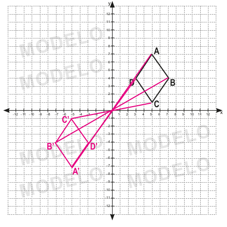2. Dado o polígono MNOPQ, construa em seu caderno um polígono simétrico a ele, em relação ao eixo x e y.
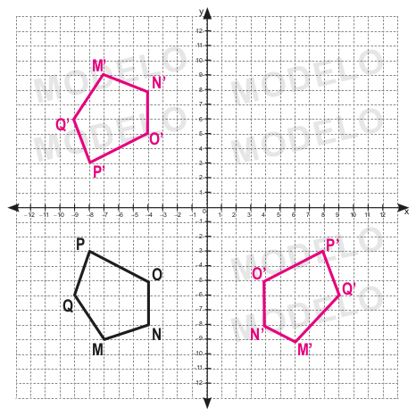Na internet é possível encontrar mais informações e sugestões didáticas para se usar em sala de aula com o programa GeoGebra. Veja algumas sugestões:
► HOHENWARTER, Markus. GeoGebra: informações. Disponível em: http://static. geogebra.org/help/docupt_ BR.pdf. Acesso em: 25 maio 2022.
► Instituto GeoGebra no Rio de Janeiro. Disponível em: www.geogebra.im-uff.mat. br/index.html. Acesso em: 25 maio 2022.
► Materiais Didáticos GeoGebra. Disponível em: https:// cutt.ly/dJqMKYx. Acesso em: 25 maio 2022.
130
Construindo figuras geométricas simétricas com softwares
Para nos auxiliar na construção de figuras geométricas podemos usar softwares de geometria dinâmica. Estes programas são ambientes virtuais que apoiam no ensino e aprendizagem da Geometria.
Vamos construir um quadrilátero utilizando o software GeoGebra. O GeoGebra é um software livre e dinâmico de Matemática que foi criado em 2001 por Markus Hohenwarter, matemático austríaco. O programa possui uma versão on-line e uma versão para download, ambas disponíveis no endereço: http://www.geogebra.org/. Para esse estudo, vamos utilizar a versão disponível em: https://www.geogebra.org/classic.
Simetria de reflexão em relação a uma reta
a) No menu superior, selecione a ferramenta “Polígono” para construir o polígono ABCD.
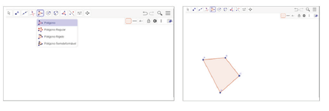b) Em seguida, selecione no menu superior a opção “Reta” para traçar a reta EF
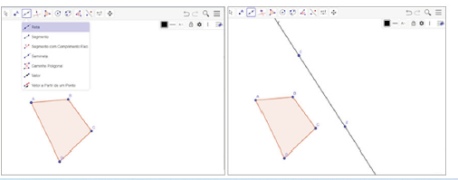c) Usando a ferramenta “Reflexão em Relação a uma Reta” trace o polígono A’B’C’D’ simétrico ao polígono ABCD em relação a reta EF.
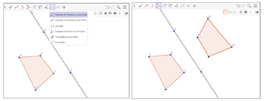
1. Com um colega e com o auxílio da ferramenta de mover o lado do polígono, o movimentem. O que é possível observar? Resposta pessoal.
Simetria de rotação
Usando o GeoGebra vamos rotacionar um polígono ABCDE em torno de um ponto qualquer.
Durante as construções com o auxílio do software GeoGebra, retome as características de cada uma das transformações geométricas e, se possível, solicite aos alunos que façam outras figuras geométricas com mais e menos vértices.
131
a) Construa o polígono ABCDE selecionando no menu superior “Polígono”. Clique em “Rotação em Torno de um Ponto” para marcar o ponto F. Esse ponto será o centro de rotação.
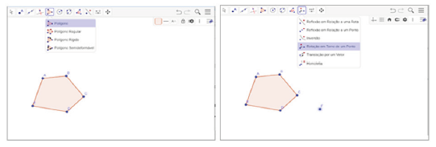b) Selecione a ferramenta “Rotação em Torno de um Ponto”, clique primeiro no polígono e depois no ponto. Você deverá indicar a medida do ângulo e o sentido em que a rotação será realizada. No exemplo mostrado, usamos a medida do ângulo de 45º no sentido horário para realizar a rotação.
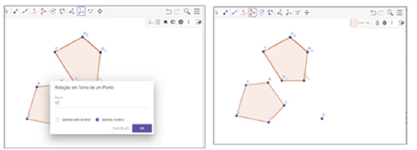2. Com um colega e com o auxílio da ferramenta de mover o lado do polígono, o movimentem. O que é possível observar? Resposta pessoal.
Simetria de translação
Usando o GeoGebra vamos transladar um polígono ABC.
a) Construa o polígono ABC selecionando no menu superior “Polígono”. Clique em “Vetor” para traçar um vetor qualquer que será o vetor da translação.
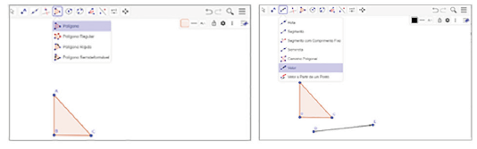b) Selecione a ferramenta “Translação” por um vetor. Em seguida, clique sobre o polígono e sobre o vetor. Aparecerá o polígono A’B’C’ que corresponde a imagem transladada do polígono ABC.
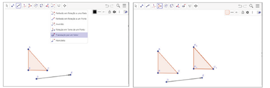3. Com um colega e com o auxílio da ferramenta de mover o lado do polígono, o movimentem. O que é possível observar? Resposta pessoal.
Probabilidade e estatística – Pictograma
Atividade 1
As formas de representação dos dados de uma pesquisa nos auxiliam a entender mais facilmente sobre o que está sendo exposto. Os gráficos pictóricos nos auxiliam neste entendimento. De acordo com Walle (2009), os alunos devem ser envolvidos em decidir como eles querem representar os seus dados. Porém, estudantes com pouca experiência com os vários métodos de visualizar dados não estarão cientes das muitas opções que estão disponíveis. Às vezes, você pode sugerir um novo modo de apresentar e comunicar os dados e orientar as crianças na aprendizagem daquele tipo de gráfico ou quadro. Uma vez que elas construam a exposição dos dados, elas podem discutir o seu valor. Esse gráfico (quadro ou imagem) informa sobre nossos dados de um modo claro? Comparados a outros modos de exibir os dados, como esse é melhor?
Ainda de acordo com esse autor, a ênfase ou objetivo desse ensino deve ajudar os alunos a perceberem o que os gráficos e quadros comunicam sobre as informações e que tipos diferentes de representações informam coisas diferentes sobre os mesmos dados. O valor de orientar os alunos a construir seus próprios gráficos não é tanto que aprendam as técnicas, mas que eles estejam pessoalmente envolvidos com os dados e que eles aprendam como um gráfico pode comunicar informações.
Por isso, nesta seção trabalhamos uma nova forma de representação das informações dadas, mostramos como ler e construir um gráfico pictórico. Para construção do gráfico, foram utilizadas imagens que representam a quantidade de homens e mulheres que compraram ingressos para um show. Cada desenho representa: homem - 8 homens; mulher - 8 mulheres. Os desenhos que estão cortados ao meio representam a metade da quantidade de homens ou mulheres.
132
Probabilidade e estatística
Pictograma
1. Ao vender os ingressos para um determinado show, uma casa de espetáculo fez uma pesquisa para saber a faixa etária das pessoas que iriam assistir à atração e assim poder planejar os próximos eventos. O resultado dessa pesquisa está representado no gráfico a seguir:
Faixa etária dos clientes
![Pictograma, gráfico com imagens e símbolos para representar quantidade. O gráfico intitulado “Faixa etária dos clientes”, é uma pesquisa para saber a faixa etária dos clientes de uma casa de espetáculo que assistiram um determinado show. Nesse gráfico utiliza-se a figura de uma mulher para representar a cada 8 mulheres, e a figura de um homem para representar a cada 8 homens. Dados do gráfico:
20 a 30 anos = 7 figuras de homens + 4 figuras de mulheres;
31 a 40 anos = 5 figuras de homens + 8 figuras de mulheres;
41 a 50 anos = 3,5 figuras de homens + 3 figuras de mulheres;
51 a 60 anos = 3 figuras de homens + 4,5 figuras de mulheres.
Fonte: Casa de espetáculo.](../../resources/images/unidade4/97.PNG)
a) Troque ideias com um colega e expliquem como o gráfico foi construído.
>b) De acordo com a faixa etária, qual delas apresenta a maior quantidade de homens e qual apresenta a maior quantidade de mulheres? Homens: de 20 a 30 anos. Mulheres: de 31 a 40 anos.
c) Qual é a faixa etária que possui a maior quantidade de pessoas? A faixa etária de 31 a 40 anos.
d) De acordo com o gráfico, quantas pessoas compareceram ao show? 304 pessoas.
e) Nesse show compareceram mais mulheres ou homens? Compareceram ao show 156 mulheres e 148 homens, portanto compareceram mais mulheres.
f) Qual é a faixa etária que possui a menor quantidade de homens? E de mulheres? Homens: de 51 a 60 anos. Mulheres: de 41 a 50 anos.
g) Nesse gráfico utilizou-se a figura de uma mulher para representar a cada 8 mulheres e a figura de um homem para representar a cada 8 homens. Qual outro desenho poderia ser usado para representar a mesma situação? Resposta pessoal.
O gráfico utilizado para representar os dados da pesquisa é denominado de pictograma.
Pictograma é um gráfico em que se utilizam imagens e símbolos para representar quantidades.
2. No pictograma a seguir, temos representadas as vendas de uma concessionária no primeiro semestre de 2022.
![Pictograma, gráfico com imagens e símbolos para representar quantidade. O gráfico intitulado “Quantidade de veículos vendidos no 1º semestre”, apresenta a quantidade de veículos vendidos, por mês, durante o primeiro semestre de um determinado ano. Nesse gráfico, utiliza-se a figura de um carro vermelho para representar a venda a cada 12 carros vendidos.
Dados do gráfico:
Janeiro: 9 figuras de carro vermelho;
Fevereiro: 10 figuras de carro vermelho;
Março: 6 figuras de carro vermelho;
Abril: 5 figuras de carro vermelho;
Maio: 6,5 figuras de carro vermelho;
Junho: 6,5 figuras de carro vermelho.
Fonte: Escritório da concessionária.](../../resources/images/unidade4/98.PNG)
132
Atividade 5
Nesta atividade, propomos que os alunos pesquisem em sites, jornais ou revistas, gráficos que estejam representados por meio de pictográficos. Aproveite e promova uma exposição das pesquisas e discuta alguns dos temas apresentados. A análise e a discussão de resultados apresentados por gráficos é de suma importância para a construção de cidadãos críticos à sua realidade local.
133
a) Qual foi a quantidade de veículos vendidos no primeiro trimestre de 2022? 300 veículos.
b) Em qual mês as vendas foram menores? Abril.
c) Em quais meses foram vendidos a mesma quantidade de veículos? Maio e junho.
d) Quantos veículos foram vendidos no primeiro semestre de 2022? 516 veículos.
3. Uma escola municipal fez um levantamento dos livros que foram emprestados no ano letivo para verificar quais os gêneros preferidos pelos alunos. O resultado do levantamento está representado no pictograma abaixo.
![Pictograma, gráfico com imagens e símbolos para representar quantidade. O gráfico intitulado “Livros emprestados na biblioteca da escola”, apresenta a quantidade de livros emprestados por gêneros preferidos pelos alunos. Nesse gráfico, utiliza-se a figura de um livro para representar a quantidade emprestada
Dados do gráfico:
Romance: 10,5 figuras de livro;
Poesia: 6 figuras de livro;
Policial: 7,5 figuras de livro;
Crônica: 5 figuras de livro;
Ficção Científica: 8 figuras de livro.
Fonte: Biblioteca da escola.](../../resources/images/unidade4/99.PNG)
a) Qual foi o gênero preferido pelos alunos? Romance.
b) Foram emprestados 108 livros de poesia. Quanto representa cada 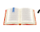? 18 livros.
c) Quantos livros de cada gênero foram emprestados nesse ano? Romance: 189 livros; Poesia: 108 livros; Policial: 135 livros; Crônica: 90 livros; Ficção científica: 144 livros.
d) Quantos livros foram emprestados ao total? 666 livros.
e) Qual é o seu gênero de livro preferido? Resposta pessoal.
4. No pictograma a seguir temos as vendas, em toneladas, de uma empresa de pescados durante 4 anos seguidos.
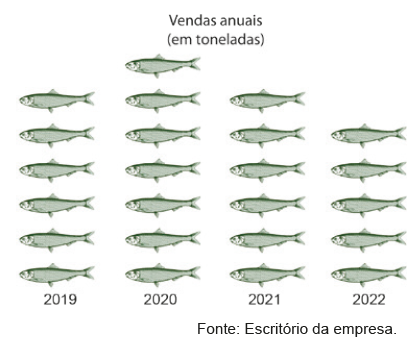
a)
No ano de 2020 foram vendidas 21 mil toneladas de peixes.
Quanto representa cada
?
3 mil toneladas.
b) Quantas toneladas foram vendidas nos demais anos? 2019: 18 mil toneladas; 2021: 18 mil toneladas; 2022: 15 mil toneladas.
c) Quantas toneladas foram vendidas ao todo nesses 4 anos? 54 mil toneladas.
5. Com um colega, pesquisem gráficos pictóricos em jornais, revistas ou sites e colem no caderno. Analisem e escrevam um texto descrevendo as informações presentes em cada gráfico pictórico pesquisado. Resposta pessoal.

Sugestão de atividade
1. Com um colega, façam uma pesquisa para saber quais são os esportes prefe- ridos da turma. Escolham quatro deles e representem as preferências em uma tabela. Cada um deverá escolher somente um esporte entre os quatro indica- dos. Escolham as imagens que irão utilizar e construam um gráfico pictórico para apresentar as informações coletadas. Resposta pessoal.
Comente com os alunos que os DVDs e o Blu-ray foram muito utilizados a partir de 1997 e eram vendidos ou alugados em estabelecimentos chamados locadoras. Atualmente a maioria dos vídeos, filmes e séries, são utilizados por meio de plataformas e aplicativos de streaming (tecnologia que permite transmitir dados de um servidor de áudio ou vídeo em tempo real para um aparelho, como smart TV, celular, computador, etc).
134
RELEMBRE
1. Blu-ray Disc, também conhecido como BD, é um formato de disco óptico com 12 cm de diâmetro (igual ao CD e ao DVD) para vídeo e áudio de alta definição e armazenamento de dados de alta densidade. É uma alternativa ao DVD e capaz de armazenar filmes até 1080p full HD de até 4 horas sem perdas. Requer uma TV full HD de LCD, plasma ou LED para explorar todo o seu potencial. Qual é a medida do raio de um disco Blu-ray? 6 cm
2. Uma pista de corrida tem forma circular e seu diâmetro mede 70 m. Um atleta corre, diariamente, um total de 5 km. Qual é o número mínimo aproximado de voltas que ele corre, todos os dias, nessa pista? (Use π = 3,14). 23 voltas aproximadamente.
3. Reproduza as figuras abaixo em uma malha quadriculada e usando a simetria de reflexão desenhe a figura simétrica de cada uma delas em relação ao eixo de simetria.
![Uma malha quadrada de 12 colunas por seis linhas. Ela está dividida ao meio por uma linha vermelha na vertical denominada de Eixo de Simetria. Do lado direito do eixo, com seis linhas e seis colunas uma figura geométrica amarela no formato de uma flecha apontada para a direita. O corpo da flecha tem o formato de um triângulo invertido. Ela inicia na segunda coluna, terceira e quarta linhas. O restante do corpo dela ocupa dois quadrados na terceira coluna, linhas 3 e 4. A ponta da flecha, no formato de um triângulo isósceles, inicia na coluna 4, linhas 2, 3, 4, 5 e termina com o vértice apontado para a direita, localizo na coluna 5, ocupando a metade dos quadrados em diagonal nas linhas 3 e 4.](../../resources/images/unidade4/imagem19.png) Eixo de simetria
Eixo de simetria
![Uma malha quadrada de 12 colunas por seis linhas. Ela está dividida ao meio por uma linha vermelha na vertical denominada de Eixo de Simetria. Do lado esquerdo do eixo, com seis linhas e seis colunas, uma figura geométrica azul no formato de uma cruz, na região central. Ela ocupa o espaço de 12 quadrados. Dois deles estão na parte de cima da cruz localizados na segunda linha, terceira e quarta colunas. O centro da cruz ocupa oito quadrados localizados quatro na parte de cima: linha 3, colunas 2, 3, 4, 5. E quatro na parte debaixo, linha 4, colunas 2, 3, 4, 5. Os outros dois quadrados restantes estão na parte debaixo da cruz localizados na quinta linha, terceira e quarta colunas.](../../resources/images/unidade4/imagem20.png) Eixo de simetria
Eixo de simetria
4. (Exame Nacional de Matemática) O símbolo ao lado está desenhado nas placas do Parque das Nações que assinalam a localização dos lavabos. As figuras a seguir representadas foram desenhadas com base nesse símbolo. Em cada uma delas, está desenhada uma reta r. Em qual delas a reta r é um eixo de simetria?
![Dentro de um quadrado o símbolo composto de duas figuras. O primeiro é um círculo com dois pontos: um à esquerda e o outro à direita, representando os olhos. Acima do círculo dois triângulos, um à esquerda e outro à direita com os vértices apontados para o centro. Juntos eles lembram a uma fita, remetendo ao gênero feminino. À direita, outro círculo com dois pontos: um à esquerda e o outro à direita. Abaixo do círculo dois triângulos, um à esquerda e outro à direita com os vértices apontados para o centro. Juntos eles lembram a uma gravata, remetendo ao gênero masculino.](../../resources/images/unidade4/100.PNG) 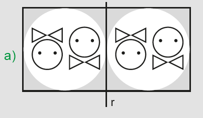
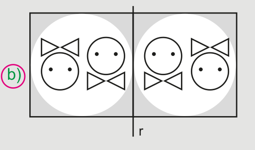
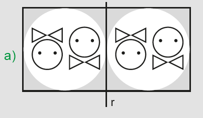
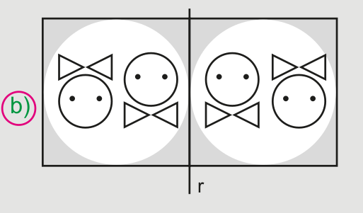
Atividade 5
Da figura I para a figura II, temos a simetria em relação ao eixo horizontal que passa pelo centro da figura.
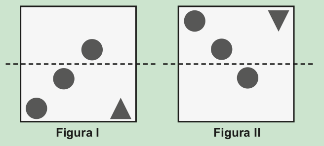Usando a mesma simetria para a figura III, temos:
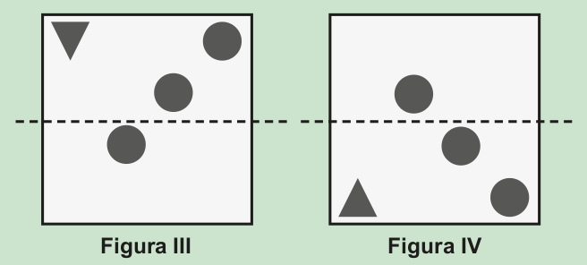Atividade 6
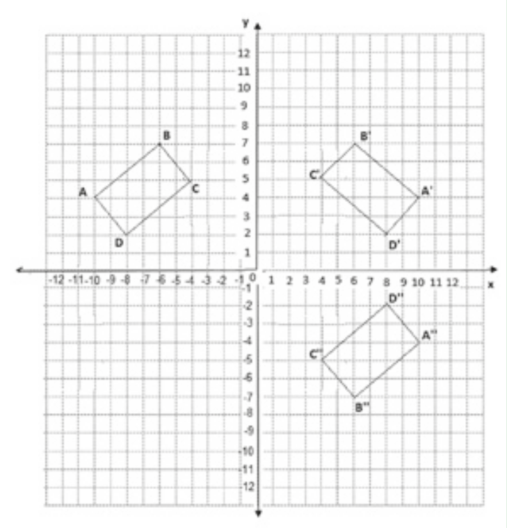135
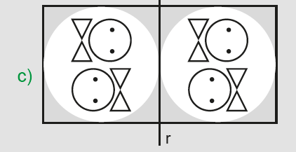 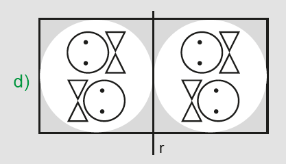 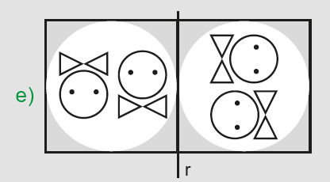5. (ENEM) Um decorador utilizou um único tipo de transformação geométrica para compor pares de cerâmicas em uma parede. Uma das composições está representada pelas cerâmicas indicadas por I e II.
![3 imagens, Em um quadrado três pontos em diagonal com início no canto inferior esquerdo. À direita, no canto inferior direito, um triângulo com o vértice apontado para cima, Em um quadrado três pontos em diagonal com início no canto superior esquerdo. À direita, no canto superior direito, um triângulo com o vértice apontado para baixo, Em um quadrado três pontos em diagonal com início no canto superior direito. À esquerda, no canto superior esquerdo, um triângulo com o vértice apontado para baixo](../../resources/images/unidade4/106.PNG)
Utilizando a mesma transformação, qual é a figura que compõe para com a cerâmica indicada por III?
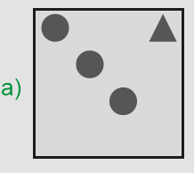 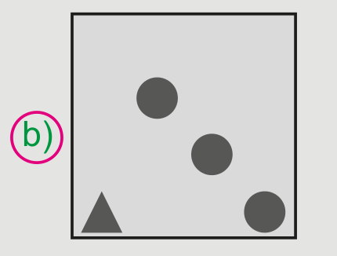 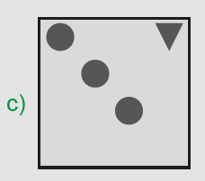 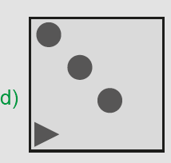 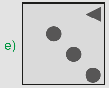
6. Construa, em um plano cartesiano, o polígono ABCD de coordenadas
A (- 10, 4), B
(- 6, 7), C
(- 4, 5) e D
(- 8, 2),
depois trace o
seu simétrico em relação a origem do plano cartesiano e em relação
ao eixo y.
O polígono A’B’C’D’ é simétrico ao polígono ABCD em re- lação ao
eixo y.
O polígono A’’B’’C’’D’’ é simétrico ao polígono ABCD em relação a
origem do plano cartesiano.